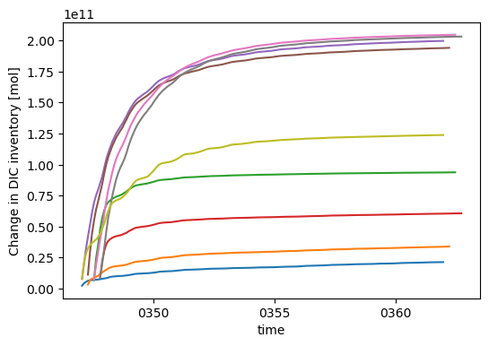

Global IRF Efficiency Map#
Generate global map of CDR efficiency using IRF forcing.
%load_ext autoreload
%autoreload 2
import xarray as xr
import matplotlib.pyplot as plt
import atlas
Define experiment and phase#
cdr_forcing = "DOR"
vintage = "001"
phase = "test"
clobber = False
calc = atlas.global_irf_map(cdr_forcing, vintage)
calc
<atlas.global_irf_map at 0x7f2b4c143e90>
calc.df_case_status
| build | submitted | run_completed | archive | error | error_count | JobId | JobState | Queued | yr_per_day | pe-hr_per_yr | |
|---|---|---|---|---|---|---|---|---|---|---|---|
| case | |||||||||||
| hr_4p2z.cdr-atlas-v0.control.001 | True | True | True | False | False | 0 | None | None | False | 0.55 | 1161551.38 |
| smyle.cdr-atlas-v0.control.001 | True | True | True | True | False | 0 | None | None | False | 45.68 | 470.78 |
| smyle.cdr-atlas-v0.glb-dor_North_Atlantic_basin_000_1999-01-01_00000.001 | True | True | True | True | False | 0 | None | None | False | 59.13 | 363.64 |
| smyle.cdr-atlas-v0.glb-dor_North_Atlantic_basin_000_1999-04-01_00001.001 | True | True | True | True | False | 0 | None | None | False | 59.10 | 363.85 |
| smyle.cdr-atlas-v0.glb-dor_North_Atlantic_basin_000_1999-07-01_00002.001 | True | True | True | False | False | 0 | None | None | False | 59.00 | 364.50 |
| smyle.cdr-atlas-v0.glb-dor_North_Atlantic_basin_000_1999-10-01_00003.001 | True | True | True | True | False | 0 | None | None | False | 59.01 | 364.42 |
| smyle.cdr-atlas-v0.glb-dor_North_Atlantic_basin_001_1999-01-01_00004.001 | True | True | True | True | False | 0 | None | None | False | 59.21 | 363.17 |
| smyle.cdr-atlas-v0.glb-dor_North_Atlantic_basin_001_1999-04-01_00005.001 | True | True | True | True | False | 0 | None | None | False | 58.77 | 365.88 |
| smyle.cdr-atlas-v0.glb-dor_North_Atlantic_basin_001_1999-07-01_00006.001 | True | True | True | True | False | 0 | None | None | False | 59.15 | 363.54 |
| smyle.cdr-atlas-v0.glb-dor_North_Atlantic_basin_001_1999-10-01_00007.001 | True | True | True | True | False | 0 | None | None | False | 59.26 | 362.85 |
| smyle.cdr-atlas-v0.glb-dor_North_Atlantic_basin_002_1999-01-01_00008.001 | True | True | True | True | False | 0 | None | None | False | 59.58 | 360.90 |
Build the model for each experiment#
clobber_list = calc.check_cases()
clobber_list
[]
calc.build(phase=phase, clobber=clobber, clobber_list=clobber_list)
Run the simulations#
n_jobs = calc.compute()
calc.df_case_status
| build | submitted | run_completed | archive | error | error_count | JobId | JobState | Queued | yr_per_day | pe-hr_per_yr | |
|---|---|---|---|---|---|---|---|---|---|---|---|
| case | |||||||||||
| hr_4p2z.cdr-atlas-v0.control.001 | True | True | True | False | False | 0 | None | None | False | 0.55 | 1161551.38 |
| smyle.cdr-atlas-v0.control.001 | True | True | True | True | False | 0 | None | None | False | 45.68 | 470.78 |
| smyle.cdr-atlas-v0.glb-dor_North_Atlantic_basin_000_1999-01-01_00000.001 | True | True | True | True | False | 0 | None | None | False | 59.13 | 363.64 |
| smyle.cdr-atlas-v0.glb-dor_North_Atlantic_basin_000_1999-04-01_00001.001 | True | True | True | True | False | 0 | None | None | False | 59.10 | 363.85 |
| smyle.cdr-atlas-v0.glb-dor_North_Atlantic_basin_000_1999-07-01_00002.001 | True | True | True | False | False | 0 | None | None | False | 59.00 | 364.50 |
| smyle.cdr-atlas-v0.glb-dor_North_Atlantic_basin_000_1999-10-01_00003.001 | True | True | True | True | False | 0 | None | None | False | 59.01 | 364.42 |
| smyle.cdr-atlas-v0.glb-dor_North_Atlantic_basin_001_1999-01-01_00004.001 | True | True | True | True | False | 0 | None | None | False | 59.21 | 363.17 |
| smyle.cdr-atlas-v0.glb-dor_North_Atlantic_basin_001_1999-04-01_00005.001 | True | True | True | True | False | 0 | None | None | False | 58.77 | 365.88 |
| smyle.cdr-atlas-v0.glb-dor_North_Atlantic_basin_001_1999-07-01_00006.001 | True | True | True | True | False | 0 | None | None | False | 59.15 | 363.54 |
| smyle.cdr-atlas-v0.glb-dor_North_Atlantic_basin_001_1999-10-01_00007.001 | True | True | True | True | False | 0 | None | None | False | 59.26 | 362.85 |
| smyle.cdr-atlas-v0.glb-dor_North_Atlantic_basin_002_1999-01-01_00008.001 | True | True | True | True | False | 0 | None | None | False | 59.58 | 360.90 |
if n_jobs > 0:
raise SystemExit("stop here to wait for computation to complete")
Validate the integrations#
%%time
if n_jobs == 0:
calc.validate(clobber=clobber)
spinning up dask cluster with scheduler:
/pscratch/sd/m/mattlong/Ocean-CDR-Atlas-v0/dask/dask_scheduler_file.9dixs5e7.json
cluster running...
Dashboard:
https://jupyter.nersc.gov//user/mattlong/perlmutter-login-node-base/proxy/10.249.1.255:8787/status
================================================================================
smyle.cdr-atlas-v0.control.001
================================================================================
smyle.cdr-atlas-v0.glb-dor_North_Atlantic_basin_000_1999-01-01_00000.001
================================================================================
smyle.cdr-atlas-v0.glb-dor_North_Atlantic_basin_000_1999-04-01_00001.001
================================================================================
smyle.cdr-atlas-v0.glb-dor_North_Atlantic_basin_000_1999-07-01_00002.001
DIC_ALT_CO2, ALK_ALT_CO2, ECOSYS_IFRAC, FG_ALT_CO2,
computing /global/cfs/projectdirs/m4746/Projects/Ocean-CDR-Atlas-v0/data/validation/smyle.cdr-atlas-v0.glb-dor_North_Atlantic_basin_000_1999-07-01_00002.001.validation.zarr
writing /global/cfs/projectdirs/m4746/Projects/Ocean-CDR-Atlas-v0/data/validation/smyle.cdr-atlas-v0.glb-dor_North_Atlantic_basin_000_1999-07-01_00002.001.validation.zarr
================================================================================
smyle.cdr-atlas-v0.glb-dor_North_Atlantic_basin_000_1999-10-01_00003.001
================================================================================
smyle.cdr-atlas-v0.glb-dor_North_Atlantic_basin_001_1999-01-01_00004.001
================================================================================
smyle.cdr-atlas-v0.glb-dor_North_Atlantic_basin_001_1999-04-01_00005.001
================================================================================
smyle.cdr-atlas-v0.glb-dor_North_Atlantic_basin_001_1999-07-01_00006.001
================================================================================
smyle.cdr-atlas-v0.glb-dor_North_Atlantic_basin_001_1999-10-01_00007.001
================================================================================
smyle.cdr-atlas-v0.glb-dor_North_Atlantic_basin_002_1999-01-01_00008.001
CPU times: user 12.1 s, sys: 840 ms, total: 12.9 s
Wall time: 5min 53s
df = calc.df_validation
df
| is_cdr_run | ALK_ALT_CO2_rmse | ALK_rmse | DIC_ALT_CO2_rmse | DIC_rmse | DOC_rmse | DOCr_rmse | DON_rmse | DONr_rmse | DOP_rmse | ... | diazC_rmse | diazChl_rmse | diazFe_rmse | diazP_rmse | spC_rmse | spCaCO3_rmse | spChl_rmse | spFe_rmse | spP_rmse | zooC_rmse | |
|---|---|---|---|---|---|---|---|---|---|---|---|---|---|---|---|---|---|---|---|---|---|
| case | |||||||||||||||||||||
| smyle.cdr-atlas-v0.control.001 | False | 0.224847 | 0.224846 | 0.325688 | 0.304365 | 0.045923 | 0.011091 | 0.004066 | 0.000207 | 0.000238 | ... | 0.000601 | 0.000147 | 4.014262e-08 | 0.000005 | 0.025289 | 0.005248 | 0.003786 | 6.857399e-07 | 0.000216 | 0.010324 |
| smyle.cdr-atlas-v0.glb-dor_North_Atlantic_basin_000_1999-01-01_00000.001 | True | 0.230523 | NaN | 0.336078 | NaN | NaN | NaN | NaN | NaN | NaN | ... | NaN | NaN | NaN | NaN | NaN | NaN | NaN | NaN | NaN | NaN |
| smyle.cdr-atlas-v0.glb-dor_North_Atlantic_basin_000_1999-04-01_00001.001 | True | 0.270639 | NaN | 0.315976 | NaN | NaN | NaN | NaN | NaN | NaN | ... | NaN | NaN | NaN | NaN | NaN | NaN | NaN | NaN | NaN | NaN |
| smyle.cdr-atlas-v0.glb-dor_North_Atlantic_basin_000_1999-07-01_00002.001 | True | 0.225976 | NaN | 0.302304 | NaN | NaN | NaN | NaN | NaN | NaN | ... | NaN | NaN | NaN | NaN | NaN | NaN | NaN | NaN | NaN | NaN |
| smyle.cdr-atlas-v0.glb-dor_North_Atlantic_basin_000_1999-10-01_00003.001 | True | 0.288906 | NaN | 0.368662 | NaN | NaN | NaN | NaN | NaN | NaN | ... | NaN | NaN | NaN | NaN | NaN | NaN | NaN | NaN | NaN | NaN |
| smyle.cdr-atlas-v0.glb-dor_North_Atlantic_basin_001_1999-01-01_00004.001 | True | 0.304392 | NaN | 0.325744 | NaN | NaN | NaN | NaN | NaN | NaN | ... | NaN | NaN | NaN | NaN | NaN | NaN | NaN | NaN | NaN | NaN |
| smyle.cdr-atlas-v0.glb-dor_North_Atlantic_basin_001_1999-04-01_00005.001 | True | 0.271811 | NaN | 0.338407 | NaN | NaN | NaN | NaN | NaN | NaN | ... | NaN | NaN | NaN | NaN | NaN | NaN | NaN | NaN | NaN | NaN |
| smyle.cdr-atlas-v0.glb-dor_North_Atlantic_basin_001_1999-07-01_00006.001 | True | 0.231316 | NaN | 0.271501 | NaN | NaN | NaN | NaN | NaN | NaN | ... | NaN | NaN | NaN | NaN | NaN | NaN | NaN | NaN | NaN | NaN |
| smyle.cdr-atlas-v0.glb-dor_North_Atlantic_basin_001_1999-10-01_00007.001 | True | 0.288712 | NaN | 0.273994 | NaN | NaN | NaN | NaN | NaN | NaN | ... | NaN | NaN | NaN | NaN | NaN | NaN | NaN | NaN | NaN | NaN |
| smyle.cdr-atlas-v0.glb-dor_North_Atlantic_basin_002_1999-01-01_00008.001 | True | 0.266986 | NaN | 0.287574 | NaN | NaN | NaN | NaN | NaN | NaN | ... | NaN | NaN | NaN | NaN | NaN | NaN | NaN | NaN | NaN | NaN |
10 rows × 40 columns
df.ALK_ALT_CO2_rmse.plot.hist(bins=20)
<Axes: ylabel='Frequency'>
df.DIC_ALT_CO2_rmse.plot.hist(bins=20)
<Axes: ylabel='Frequency'>
df.FG_ALT_CO2_rmse.plot.hist(bins=20)
<Axes: ylabel='Frequency'>
Analysis#
paths = calc.analyze(clobber=False)
paths
spinning up dask cluster with scheduler:
/pscratch/sd/m/mattlong/Ocean-CDR-Atlas-v0/dask/dask_scheduler_file.fg4ubnii.json
cluster running...
Dashboard:
https://jupyter.nersc.gov//user/mattlong/perlmutter-login-node-base/proxy/10.249.1.255:8787/status
================================================================================
smyle.cdr-atlas-v0.glb-dor_North_Atlantic_basin_000_1999-01-01_00000.001
================================================================================
smyle.cdr-atlas-v0.glb-dor_North_Atlantic_basin_000_1999-04-01_00001.001
================================================================================
smyle.cdr-atlas-v0.glb-dor_North_Atlantic_basin_000_1999-07-01_00002.001
computing /global/cfs/projectdirs/m4746/Projects/Ocean-CDR-Atlas-v0/data/analysis/smyle.cdr-atlas-v0.glb-dor_North_Atlantic_basin_000_1999-07-01_00002.001.analysis.zarr
writing /global/cfs/projectdirs/m4746/Projects/Ocean-CDR-Atlas-v0/data/analysis/smyle.cdr-atlas-v0.glb-dor_North_Atlantic_basin_000_1999-07-01_00002.001.analysis.zarr
================================================================================
smyle.cdr-atlas-v0.glb-dor_North_Atlantic_basin_000_1999-10-01_00003.001
================================================================================
smyle.cdr-atlas-v0.glb-dor_North_Atlantic_basin_001_1999-01-01_00004.001
================================================================================
smyle.cdr-atlas-v0.glb-dor_North_Atlantic_basin_001_1999-04-01_00005.001
================================================================================
smyle.cdr-atlas-v0.glb-dor_North_Atlantic_basin_001_1999-07-01_00006.001
================================================================================
smyle.cdr-atlas-v0.glb-dor_North_Atlantic_basin_001_1999-10-01_00007.001
================================================================================
smyle.cdr-atlas-v0.glb-dor_North_Atlantic_basin_002_1999-01-01_00008.001
['/global/cfs/projectdirs/m4746/Projects/Ocean-CDR-Atlas-v0/data/analysis/smyle.cdr-atlas-v0.glb-dor_North_Atlantic_basin_000_1999-01-01_00000.001.analysis.zarr',
'/global/cfs/projectdirs/m4746/Projects/Ocean-CDR-Atlas-v0/data/analysis/smyle.cdr-atlas-v0.glb-dor_North_Atlantic_basin_000_1999-04-01_00001.001.analysis.zarr',
'/global/cfs/projectdirs/m4746/Projects/Ocean-CDR-Atlas-v0/data/analysis/smyle.cdr-atlas-v0.glb-dor_North_Atlantic_basin_000_1999-07-01_00002.001.analysis.zarr',
'/global/cfs/projectdirs/m4746/Projects/Ocean-CDR-Atlas-v0/data/analysis/smyle.cdr-atlas-v0.glb-dor_North_Atlantic_basin_000_1999-10-01_00003.001.analysis.zarr',
'/global/cfs/projectdirs/m4746/Projects/Ocean-CDR-Atlas-v0/data/analysis/smyle.cdr-atlas-v0.glb-dor_North_Atlantic_basin_001_1999-01-01_00004.001.analysis.zarr',
'/global/cfs/projectdirs/m4746/Projects/Ocean-CDR-Atlas-v0/data/analysis/smyle.cdr-atlas-v0.glb-dor_North_Atlantic_basin_001_1999-04-01_00005.001.analysis.zarr',
'/global/cfs/projectdirs/m4746/Projects/Ocean-CDR-Atlas-v0/data/analysis/smyle.cdr-atlas-v0.glb-dor_North_Atlantic_basin_001_1999-07-01_00006.001.analysis.zarr',
'/global/cfs/projectdirs/m4746/Projects/Ocean-CDR-Atlas-v0/data/analysis/smyle.cdr-atlas-v0.glb-dor_North_Atlantic_basin_001_1999-10-01_00007.001.analysis.zarr',
'/global/cfs/projectdirs/m4746/Projects/Ocean-CDR-Atlas-v0/data/analysis/smyle.cdr-atlas-v0.glb-dor_North_Atlantic_basin_002_1999-01-01_00008.001.analysis.zarr']
fig, ax = plt.subplots(1, 1, figsize=(6, 4))
for p in paths:
da = xr.open_zarr(p)["DIC_ADD_TOTAL"]
da.plot(ax=ax)

Visualization#
calc.visualize(clobber=True)